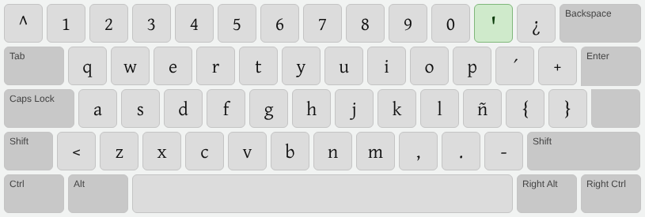
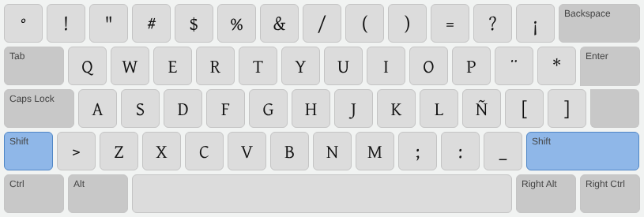
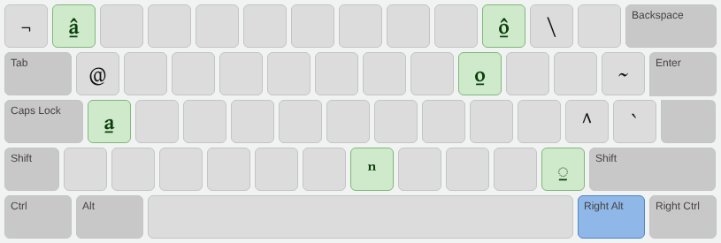
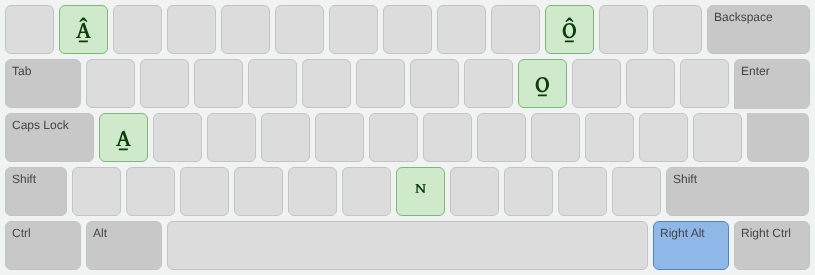

Ñomndaa (Amuzgo de Guerrero): cómo empezar
Este es un teclado para escribir el ñomndaa (amuzgo de Guerrero, México), basado en la distribución
Español (Latinoamérica). Las teclas que ya conoces siguen en el mismo lugar.
This keyboard supports the Ñomndaa (Guerrero Amuzgo) language of Mexico. It is based on the
Spanish (Latin America) layout, so every key stays where you expect it.
Diseño del teclado / Desktop Keyboard Layout
Las teclas en verde son las propias del ñomndaa. / Keys in green are specific to Ñomndaa.
- ꞌ saltillo: tecla del apóstrofo (a la derecha del 0).
- a̱ o̱ macrón inferior: AltGr + A, AltGr + O. Después de cualquier letra: AltGr + /.
- â̱ ô̱: AltGr + 1, AltGr + 0.
- â ê î ô circunflejo: tecla ^ (a la izquierda del 1) y luego la vocal.
- ⁿ nasal: AltGr + N.
- Teléfono / Touch: mantén presionada una vocal para ver sus variantes.
Normal (Default, unshifted)

Shift

AltGr / Right ALT (unshifted)

Shift + AltGr / Shift Right ALT
